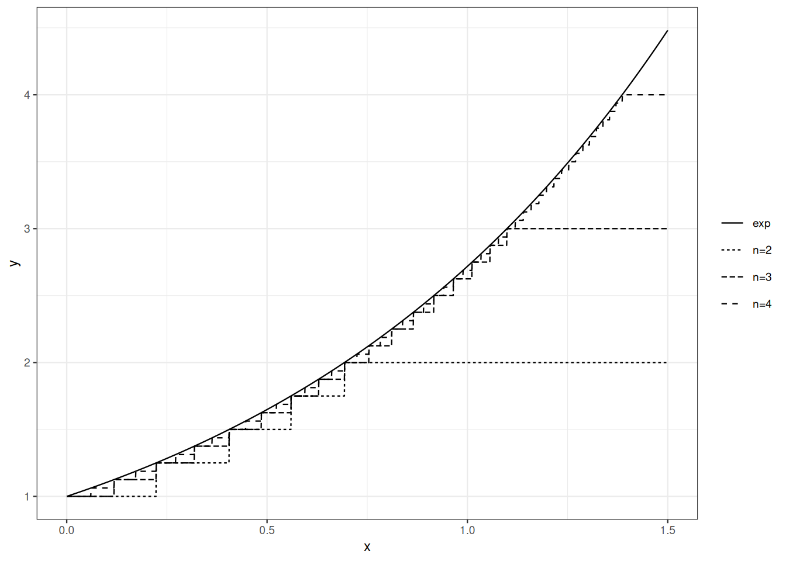

3 A modicum of integration
3.1 Roadmap
We start by reviewing basic definitions and results from integration theory. We follow the measure-theoretic approach. First, we define simple functions, a subclass of piecewise measurable functions in Section 3.2). Defining the integral of a simple function with respect to a measure in Section 3.3) is straightforward. Some more work allows us to derive useful properties: linearity, monotonicity, to name a few. In Section 3.3), we define the integral of a non-negative measurable function as a supremum of integrals of simple functions. This definition is theoretically sound and it lends itself to computations. Section 3.4) states three convergence theorems culminating with the dominated convergence theorem.
3.2 Simple functions
The integral of a \(\{0,1\}\)-valued measurable function \(f\) with respect to a measure \(\mu\) is defined \[\int_{\Omega} f \mathrm{d}\mu = \mu\Big(f^{-1}(\{1\})\Big) \, ,\] alternatively \[\int_{\Omega} \mathbb{I}_A \mathrm{d}\mu = \mu(A) \qquad \text{for any measurable set } A\,.\] The next step consists in defining the integral of finite linear combinations of \(\{0,1\}\)-valued measurable function \(f\).
A simple function defines a partition of \(\Omega\) into finitely many measurable classes. The simple function is constant on each class.
If \(f\) is a simple function, then the \(\sigma\)-algebra \(f^{-1}(\mathcal{B}(\mathbb{R}))\) is finite.
Simple functions are finite linear combinations of set characteristic (indicator) functions.
- For each \(A \in \mathcal{F}\), \(\mathbb{I}_A\) is simple
- For any finite collection \(A_1, \ldots, A_n\) of measurable subsets of \(\Omega\), any sequence \(c_1, \ldots, c_n\) of real numbers, \(\sum_{i \leq n} c_i \mathbb{I}_{A_i}\) is a simple function
- For any measurable function \(f: \Omega \to \mathbb{R}\), and \(n \in \mathbb{N}\), the function \(g_n\) defined by \[g_n(\omega) = n \wedge (-n \vee \lfloor f(\omega) \rfloor)\] is simple.
The definition of the integral of a simple function with respect to a measure is straightforward: it is a finite sum.
Note that if measure \(\mu\) is not finite, the integral of a simple non-negative function may be infinite.
If \(\mu(A_i)=\infty\) and \(f_i=0\), we agree on \(f_i \mu(A_i) =0\).
If we turn to signed simple functions, it is enough to notice than if \(f\) is simple, so are \((f)_+\) and \((f)_-\) and to define \(\int_\Omega f \mathrm{d}\mu\) as \[\int_\Omega (f)_+ \mathrm{d}\mu - \int_\Omega (f)_- \mathrm{d}\mu\] provided at leat one of the two summands is finite.
Although they are simple, simple functions have interesting approximation capabilities. Any non-negative measurable function can be approximated from below by non-negative simple functions.
Proof. Define \(f_n\) as \[ f_n(\omega) = n \wedge \Big(2^{-n} \big\lfloor 2^n f(\omega) \big\rfloor \Big) \, .\] As \[\big\lfloor 2^n f(\omega) \big\rfloor \leq 2^n f(\omega)\] we have \(f_n(\omega)\leq f(\omega)\) for all \(\omega\).
The range of function \(f_n\) is \(i \times 2^{-n}\) for \(i=0, \ldots, n \times 2^n\). For each \(i \in 0, \ldots, (n-1) \times 2^n\)
\[f_n^{-1}\Big(\{i \times 2^{-n}\}\Big) =f^{-1}\Big(\Big[\frac{i}{2^n}, \frac{i+1}{2^n}\Big)\Big)\]
which is in \(\mathcal{F}\) because \(f\) is measurable and \(\Big[\frac{i}{2^n}, \frac{i+1}{2^n}\Big) \in \mathcal{B}(\mathbb{R})\).
Likewise \(f_n^{-1}\Big(\{n\}\Big) =f^{-1}\big(\big[n, \infty\big)\big)\) belongs to \(\mathcal{F}\).
To check that \(f_n \leq f_{n+1}\), we consider two cases.
- \(f_{n+1}(\omega)\geq n\). This entails \(f(\omega)\geq n\) and thus \(f_n(\omega)=n <f_{n+1}(\omega)\)
- \(f_{n+1}(\omega) = k + i 2^{-n-1}\) for \(k<n\) and \(i<2^{n+1}\). This entails \(f_{n}(\omega) = k + \lfloor i/2\rfloor 2^{-n} \leq f_{n+1}(\omega)\).
Finally if \(f(\omega) \leq n\), \(0 \leq f(\omega) - f_n(\omega) \leq 2^{-n}\). This implies that \(\lim_n f_n(\omega)=f(\omega)\) for all \(\omega\).
Figure Figure 3.1 illustrates the approximation capabilities of simple functions.
3.3 Integration
Let \(\mathcal{S}_+\) denote the set of non-negative simple functions on \((\Omega, \mathcal{F})\).
If the supremum is finite, the function is said to be integrable with respect to \(\mu\), or to be \(\mu\)-integrable.
Prove Proposition Proposition 3.5.
Prove Proposition Proposition 3.6.
The integral of a signed measurable functions is defined by a decomposition argument. Let \(f\) be a measurable function and \(f= (f)_+ - (f)_-\), then
\[ \int_{\Omega} f \mathrm{d}\mu = \int_{\Omega} (f)_+ \mathrm{d}\mu - \int_{\Omega} (f)_- \mathrm{d}\mu \]
provided at least one of \(\int_{\Omega} (f)_+ \mathrm{d}\mu\) and \(\int_{\Omega} (f)_- \mathrm{d}\mu\) is finite.
3.4 Limit theorems
In this section, measurable functions are meant to be real-valued, and \(\mathbb{R}\) is endowed with the Borel \(\sigma\)-algebra (\(\mathcal{B}(\mathbb{R})\)).
Theorems Theorem 3.1, Theorem 3.2, Theorem 3.3 below are the three pillars of integral calculus.
The proof of the monotone convergence theorem boils down to the definition of positive measure and property \(\mu(\lim_n \uparrow A_n)= \lim_n \uparrow \mu(A_n)\).
Proof. Let function \(f\) be defined by \(f(\omega)=\lim_n \uparrow f_n(\omega)\) for all \(\omega \in \Omega\). Note that if \(f(\omega)=0\), then \(f_n(\omega)=0\) for all \(n\in \mathbb{N}\).
The function \(f\) is positive measurable. In order to prove the monotone convergence theorem it is enough to check that for every non-negative simple function \(g\) such that \(g \leq f\) everywhere, for any \(a\in [0, 1)\), the following holds:
\[ a \int g \, \mathrm{d} \mu \leq \lim_n \uparrow \int f_n \, \mathrm{d}\mu \,. \tag{3.1}\]
For each \(n \in \mathbb{N}\), define
\[E_n = \Big\{ \omega : f_n(\omega) \geq a g(\omega)\Big\}.\]
Note that as \((f_n)_n\) is non-decreasing, the sequence \((E_n)\) is non-decreasing. Moreover, if \(f(\omega)>0\) as \(\lim_n \uparrow f_n(\omega)=f(\omega) > a f(\omega) \geq a g(\omega)\). Hence for all \(\omega \in \Omega\), \(\mathbb{I}_{E_n}(\omega)=1\) for all sufficiently large \(n\) (beware there is no uniformity guarantee). We have
\[\lim_n \uparrow E_n = \Omega\, .\]
Combining the different remarks, we have for all \(n\), \(\mathbb{I}_{E_n} a g \leq f_n\) everywhere. Monotonicity of integration entails, for all \(n\)
\[\int \mathbb{I}_{E_n} a g \,\mathrm{d}\mu \leq \int f_n \,\mathrm{d}\mu \qquad\forall n\, .\]
Now, for each \(n\), \(\mathbb{I}_{E_n} a g\) is a non-negative simple function, and the sequence \((\mathbb{I}_{E_n} a g)_n\) is a non-decreasing sequence of non-negative simple functions converging towards simple function \(ag\).
Let \(g = \sum_{i \leq k} c_i \mathbb{I}_{A_i}\) where \((A_i)_{i\leq k}\) is a finite partition of \(\Omega\) into measurable subsets.
\[\mathbb{I}_{E_n} g = \sum_{i \leq k} c_i \mathbb{I}_{A_i \cap E_n} \, .\]
Hence
\[ \begin{array}{rl} \int \mathbb{I}_{E_n} a g\, \mathrm{d}\mu & = \sum_{i \leq k} c_i \int \mathbb{I}_{A_i \cap E_n}\, \mathrm{d}\mu \\ & = \sum_{i \leq k} c_i \mu(A_i \cap E_n) \, . \end{array} \]
For each \(i \leq k\), we have \(\lim_n \uparrow c_i \mu(A_i \cap E_n) = c_i \mu(A_i)\). We have:
\[ \int \lim_n \uparrow \mathbb{I}_{E_n} a g \,\mathrm{d}\mu = \lim_n \uparrow \int \mathbb{I}_{E_n} a g \, \mathrm{d}\mu \, . \]
This proves that Equation 3.1 holds for all \(a\in [0,1)\) and \(g \in \mathcal{S}_+\) with \(g \leq f\):
\[\forall g \in \mathcal{S}_+ \text{ with } \forall a \in [0,1),\]
The non-negativity assumptiom on \(f_n\) is not necessary. It is enough to assume \(\int f_1 \mathrm{d}\mu > - \infty\). Prove this.
Let \((f_n)_n\) be a monotone decreasing sequence of non-negative measurable functions. Let \(f = \lim_n \downarrow f_n\) (check the existence of \(f\)).
Is it true that \(\int \lim_n \downarrow f_n \mathrm{d}\mu = \lim_n \downarrow \int f_n \mathrm{d}\mu\)?.
Answer the same question assuming \(\int f_1 \mathrm{d}\mu < \infty\).
Answer the same question if \(\mu\) is assumed to be a probability measure.
Proof. Define \(h_n(\omega) = \inf_{m\geq n} f_n(\omega)\). Each \(h_n\) is also non-negative and measurable. By monotonicity, \[\int h_n \mathrm{d}\mu \leq \inf_{m\geq n} \int f_m \mathrm{d}\mu \, .\]
The sequence \(h_n\) is non-decreasing. And \(\lim \uparrow h_n(\omega) = \liminf f_n(\omega)\) for all \(\omega \in \Omega\). For each \(n\), by the monotone convergence theorem (Theorem 3.1):
\[\int \lim_n \uparrow h_n \mathrm{d}\mu = \lim_n \uparrow \int h_n \mathrm{d}\mu\]
so that \[\int \liminf_n f_n \mathrm{d}\mu = \lim_n \uparrow \int h_n \mathrm{d}\mu\]
and \[\int \liminf_n f_n \mathrm{d}\mu \leq \lim_n \inf_{m\geq n} \int f_m \mathrm{d}\mu = \liminf_{n} \int f_n \mathrm{d}\mu\]
Proof. Let us first check that \(f\) is integrable.
Observe that \(\lim_n |f_n| = |f|\) and thus \(\liminf |f_n| = |f|\).
By Theorem 3.2,
\[ \int |f| \mathrm{d}\mu = \int \liminf_n |f_n| \mathrm{d}\mu \leq \liminf_n \int |f_n| \mathrm{d}\mu = \int |g| \mathrm{d}\mu < \infty \,. \]
Now define \(h_n = \inf_{m\geq n} f_m\) and \(j_n = \sup_{m \geq n}f_m\). We have \(\lim_n \uparrow h_n = f\) and \(\lim_n \downarrow j_n=f.\)
Note also that
\[\int h_n \mathrm{d}\mu \leq \int f \mathrm{d}\mu \leq \int j_n \mathrm{d}\mu \, .\]
By monotone convergence \(\int h_n \mathrm{d}\mu \uparrow \int f\mathrm{d}\mu\) and \(\int j_n \mathrm{d}\mu \downarrow \int f\mathrm{d}\mu\). This entails \(\lim \int f_n \mathrm{d}\mu\).
Let \(g: \Omega \times \mathbb{R} \to \mathbb{R}\) be a function of two variables such that for each \(t \in \mathbb{R}\), \(g(\cdot, t)\) is measurable. Assume that for each \(t \in \mathbb{R}\), \(g(\cdot, t)\) is \(\mu\)-integrable and that for each \(\omega \in \Omega\), \(g(\omega, \cdot)\) is differentiable. Define \(G(t)= \int_{\Omega} g(\omega, t) \mathrm{d}\mu(\omega)\).
Is it always true that \(G\) is differentiable at every \(t\)?
Provide sufficient conditions for \(G\) to be differentiable and
\[G'(t) = \int \frac{\partial g}{\partial s}(\omega, s)_{|s=t} \mathrm{d}\mu(\omega) \, .\]
3.5 Probability distributions defined by a density
Proof. The fact that \(\nu(\emptyset)=0\) is immediate.
The fact that \(\nu\) is \(\sigma\)-additive follows from the monotone convergence theorem ( Theorem 3.1).
If \(A_1, \ldots, A_n, \ldots\) is a collection or pairwise disjoint measurable sets,
\[ \begin{array}{rl} \nu(\cup_n A_n) & = \int \mathbb{I}_{\cup_n A} f \, \mathrm{d}\mu \\ & = \int \Big(\lim_n \sum_{k\leq n}\mathbb{I}_{A_k}\Big) f \, \mathrm{d}\mu \\ & = \int \Big(\lim_n \sum_{k\leq n}\mathbb{I}_{A_k} f \Big) \, \mathrm{d}\mu \\ & = \lim_n \sum_{k\leq n} \int \mathbb{I}_{A_k} f \, \mathrm{d}\mu \\ & = \lim_n \sum_{k\leq n} \int \mathbb{I}_{A_k} f \, \mathrm{d}\mu \\ & = \lim_n \sum_{k\leq n} \nu(A_k) \\ & = \sum_{k=1}^\infty \nu(A_k) \, . \end{array} \]
The fourth equality is justified by the monotone convergence theorem, others equalities follow from the fact that we are handling non-negative series.
\(\square\)
Let \((A_n)_n\) be such that \(A_n \in \mathcal{F}, \mu(A_n)<\infty\) for each \(n\) and \(\cup_n A_n = \Omega\). For each \(n\), we have \(\nu(A_n) = \int_{A_n} f \,\mathrm{d}\mu \leq \int_{\Omega} f \,\mathrm{d}\mu < \infty\). This proves that if \(\mu\) is \(\sigma\)-finite, so is \(\nu\).
3.6 Bibliographic remarks
Dudley (2002) gives a self-contained and thorough treatment of measure and integration theory with probability theory in mind.
Hiriart-Urruty & Lemaréchal (1993) is an excellent and accessible reference on convexity.
Dudley, R. M. (2002). Real analysis and probability (Vol. 74, p. x+555). Cambridge: Cambridge University Press.
Hiriart-Urruty, J.-B., & Lemaréchal, C. (1993). Convex analysis and minimization algorithms. I (Vol. 305, p. xviii+417). Springer-Verlag, Berlin.